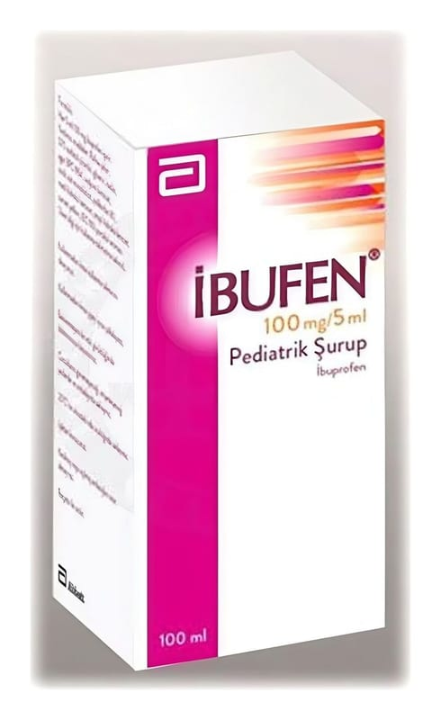

Ibufen 100 mg/5 ml 100 ml Pediatrik Şurup

Ne için kullanılır
KT · Bölüm 1• İBUFEN®, turuncu renkli, portakal aromalı bir şuruptur. • İBUFEN®, 100 mL’lik kahverengi cam şişeler içinde piyasaya sunulmaktadır. • İBUFEN®’in etkin maddesi olan ibuprofen, NSAİİ olarak adlandırılan non-steroid antiinflamatuvar (steroid olmayan iltihap giderici) bir ilaç sınıfına aittir. • İBUFEN®bu özellikleri dolayısıyla, aşağıdaki durumlarda kullanılmaktadır: - 6 ay ve üzerindeki çocuklarda ateşin düşürülmesi amacıyla kısa süreli olarak, - 6 ay ve üzerindeki çocuklarda hafif ve orta derecedeki ağrıların giderilmesi amacıyla kısa süreli olarak, - Çocukluk çağı romatizmal eklem hastalığı (juvenil artrit) belirtilerinin tedavisi.